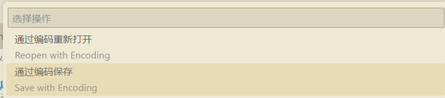

前言
简介
本书用于记录作者学习使用数据库之间发生的故事。
本书基于 mdbook 编写，已部署至 https://17999824wyj.github.io/db_learn/。
声明
此处叠甲：
- 非官方手册，均为自学期间的记录
- 作者郑重声明，其坚定地站在维护知识产权的立场上，全力支持正版软件的使用权
- 本手册仅用于学习交流，不得用于商业用途
- 若需要复现本手册的操作，则本手册中涉及的所有软件均需要读者自行下载，并保证软件来源合法合规
纠错与交流
联系方式：
- 邮箱：abcd1234dbren@yeah.net
- github: https://github.com/17999824wyj
- gitee: https://gitee.com/wang-yijia_DB
- gitcode: https://gitcode.com/abcd1234-wyj
欢迎给本项目以及其它项目点 star
近期更新内容
- 2025-03-15: 更新了 QA 章节，增加了问题："如何在 Navicat 里看 ER 图？"
- 2025-03-20: 增加了一个新的章节: "脱离 Navicat 依赖"，主要处理 macos 的操作适配
- 2025-03-20: 更新了 QA 章节，增加了问题："如何使用 vscode 调整文件编码？"
目录
环境准备 - 数据库连接工具
在现代化的软件开发和维护过程中，数据库扮演着至关重要的角色。为了更高效、更安全地管理和操作数据库，我们通常不会直接在数据库服务器上执行命令，而是通过专业的数据库连接工具来进行。这些工具提供了友好的用户界面、便捷的操作方式以及强大的功能支持。
本节目录
环境准备 - 数据库连接工具 Navicat
Navicat 是一款广受欢迎的数据库管理工具，它支持多种数据库系统，如 MySQL、MariaDB、MongoDB、SQL Server、Oracle、PostgreSQL 以及 SQLite 等。Navicat 提供了强大的数据库管理功能，包括数据库开发、数据同步、结构管理、数据导入/导出等。需要注意的是，Navicat 是一款收费的正版软件，我们强烈建议用户购买正版以获得最佳的使用体验和售后服务。
有课程资料包
如果您已经获得了课程资料包，那么您可以直接使用包内提供的 Navicat 安装程序。请按照以下步骤进行操作：
- 解压课程资料包，找到 Navicat 安装程序。
- 阅读其内的
准备Navicat/操作流程.txt文档。 - 双击安装程序，开始安装过程。
- 在安装过程中，请确保遵循屏幕上的提示进行操作，并同意软件许可协议。
无课程资料包
如果没有得到资料包，请自行下载 Navicat，下载地址为：https://www.navicat.com.cn/download/navicat-premium。
下载步骤如下：
- 访问 Navicat 官方下载页面：https://www.navicat.com.cn/download/navicat-premium
- 选择适合您操作系统的版本进行下载。
- 下载完成后，运行安装程序。
- 安装过程中，您将需要同意软件许可协议。请仔细阅读协议内容，了解您的权利和义务。
- 按照安装向导的提示完成安装步骤。安装完成后，您将需要购买并输入正版授权信息来激活软件。
注意事项
在安装 Navicat 的过程中，以下是一些额外的建议和注意事项：
- 确保您的计算机满足 Navicat 的系统要求。
- 在安装过程中，您可以选择自定义安装路径和功能组件。
- 安装完成后，您可以创建桌面快捷方式，以便快速访问 Navicat。
- 如果您在安装过程中遇到任何问题，可以参考 Navicat 官方提供的安装指南或者联系技术支持。
完成标志
通过以上步骤，应该能够成功安装并开始使用 Navicat，从而更加高效地管理和操作您的数据库。我们可以打开 Navicat 来验证此环境已经准备完毕，在打开 Navicat 后，应该能够看到如下主界面，作为完成环境准备的一个标志：
注：新打开的 Navicat 窗口的左边栏部分，可能显示为空，这是因为尚未连接过任何数据库。
强调项
再次强调，为了支持软件开发者的劳动成果，请使用正版软件。
金仓数据库环境配置
本节旨在详细阐述金仓数据库的环境配置流程，涵盖了从安装金仓数据库、操作数据库，到使用数据库连接工具 Navicat 连接数据库的全方位说明。
本节目录
安装金仓数据库
以下内容将介绍如何在 Windows 系统上进行金仓数据库的图形化安装。若您倾向于使用命令行安装，请参阅官方文档以获取详细步骤。
PS：我使用的金仓数据库版本为 V8R6。
下载安装包
有课程资料包
在的课程资料包中，安装数据库 文件夹内包含了一个以 .iso 为扩展名的文件。双击此文件以打开，其内部有一个名为 KINGBASE.EXE 的安装程序。
无课程资料包
若未获得课程资料包，可访问金仓数据库官方网站以下载安装包：金仓数据库官方下载
使用安装包
图形化安装
以下是基于图形界面的安装步骤。若在安装过程中遇到任何错误，请参考金仓官方手册：金仓数据库 Windows 安装指南
我们将逐步解析安装过程：
在安装之前，请先保证系统某一磁盘(单一磁盘！)的剩余空间大于 12GB，否则安装程序会拒绝安装。
- 运行
KINGBASE.EXE，等待其解压完成后自动开始安装。 - 遵循安装向导的指示完成安装。部分情况下，可能会让选择
实例管理，推荐选择新的实例。- 在打开的窗口中，先同意许可证，然后点击
下一步： - 然后选择许可协议。点击右侧的
选择授权文件后：
- 对于有课程资料包的用户，请选择课程资料包里面的
安装数据库目录下的名叫license_***的目录，里面有一个名字类似license_***.dat的文件，选择该文件后，点击下一步。 - 对于无课程资料包的用户，请在官网上下载到
license.dat文件，然后选择该文件，点击下一步。
- 对于有课程资料包的用户，请选择课程资料包里面的
- 在
选择安装集时，选择完全安装，之后点击下一步：
- 在
选择安装目录时，选择一个合适的目录进行安装，需要保证该目录隶属的磁盘有超过 12G 的剩余空间，否则会直接安装失败！ - 之后一直选择
下一步，直到获取用户输入部分。此部分我们需要进行一系列配置(其它参数不用动)：
- 端口号配置：54321
- 管理员用户名：system
- 密码我们选择简单的
123456 - 确认密码：
123456 - 编码：
GBK - 兼容模式：
MySQL - 大小写敏感：
NO
- 最后，点击
下一步并稍作等待，程序即可完成安装。 - 如果过程中，出现提示说
发生问题，则请使用安装后自带的卸载工具将数据库卸载干净，然后重新安装。
- 在打开的窗口中，先同意许可证，然后点击
命令行安装
对于命令行安装，请参照以下官方手册进行：
- Windows 版：金仓数据库 Windows 命令行安装指南
- Linux 版：金仓数据库 Linux 命令行安装指南
完成标志
如官方手册所示：

强调项
由于作者在安装过程中并没有出现错误，故如果过程出现报错，请参考官方手册的 QA 部分。
PS：有时候简单的重来也可能能够解决问题，但注意，重来之前务必把之前的内容删干净，且重来时选择 新的实例！
连接数据库
本节目录
使用 Navicat 连接金仓数据库
接下来，我们将介绍如何使用 Navicat 这一强大的数据库连接工具来连接金仓数据库。请确保您已经安装了 Navicat 并激活了正版授权，以便顺利执行以下步骤。
背景知识
如文章：https://www.zhihu.com/question/582960448 所介绍的，金仓可以视作一个闭源的 PostgreSQL，因此我们使用 Navicat 连接金仓数据库时，需要使用 PostgreSQL 的连接方式。
连接步骤
- 打开 Navicat，点击左上角的
连接按钮，选择PostgreSQL，之后点击右下角的下一步。 - 在弹出的窗口中，填写连接信息，包括：

连接名称：自定义，用于标识该连接。主机：由于是本机部署，因此填写localhost。端口：金仓数据库默认端口为54321。我们之前的环境搭建章节也是填写的这个端口。初始数据库：填写test，这是金仓数据库的默认数据库，之前也配置过。用户名：填写system，这是金仓数据库的默认用户名，之前也配置过。密码：之前配置的123456。
- 然后我们需要先点击左下角的
测试连接按钮，确保连接信息正确。 - 测试连接成功后，点击右下角的
确定按钮，完成连接的创建。 - 若连接不成功，可以尝试按照常见 Q & A 中的方法解决。
完成标志
双击 / 右键点击 Navicat 左侧的 连接名称，如果能够进行展开，并看到其内的 test 数据库和其它的系统自带的数据库，则说明连接成功。如下图：

PS：图里面的 seamart 数据库是后续建立的，没有是正常情况。
常见 Q & A
因为数据库未打开，连接失败
在连接过程中，可能出现连接失败，这时候可能是因为数据库还未打开，如果出现这种情况，请先打开金仓数据库，再重新尝试连接。
解决方案如下：
- 到金仓数据库的安装路径内，如：

- 选择
Server这个快捷方式，进入到Server的bin目录，如：
- 打开命令行(我使用的是
Powershell)并进入到bin目录，如： - 输入命令：
./system_ctl.exe -D 你的数据目录 start，这里提到的你的数据目录，就是在之前环境配置里配过的内容，如果用的是默认的，那就在你的安装目录里的data目录内。如图所示：
预期如下所示：

然后，回到 Navicat，重新点击 测试连接，如果连接成功，则可以正常连接金仓数据库。
数据加载
本部分将介绍如何将课程资料包内的数据加载到金仓数据库中。若无课程资料包，请自行获取。作者无权也不会提供课程资料包。
本节目录
背景知识简介
SQL 脚本
在数据迁移的过程中，一种常见的解决方案是将数据从源数据库导出为 SQL 脚本，随后在目标数据库中执行该脚本以实现数据的迁移。
SQL 脚本实质上是一系列 SQL 语句的集合，这些语句负责创建表格、插入数据、更新记录、删除记录等操作。当执行 SQL 脚本时，数据库管理系统会按照脚本文件中的顺序逐条执行这些语句，从而完成数据的迁移工作。
分析型数据库 PostgreSQL
数据库系统根据其设计目的和应用场景的不同，可以分为多种类型。例如，MySQL 数据库主要用于处理在线事务处理（OLTP）任务，而 PostgreSQL 则专为在线分析处理（OLAP）而设计，适用于数据分析场景。数据库还可以根据数据模型的不同，分为关系型和非关系型两大类。
PostgreSQL 是一款功能强大的开源分析型数据库，金仓数据库与其类似，同样属于分析型数据库。这类数据库的主要特点是更加侧重于数据分析。本课程资料包中的 Seamart 数据集即是源自金仓数据库，专为分析目的而设计的。
数据库模型
数据库系统在架构上可以类比于一款 Web 应用。正如 Web 应用包含前端和后端，前端负责用户界面的展示和数据交互，后端则处理逻辑和存储数据。类似地，数据库系统也可以分为前端和后端。数据库的前端通常负责数据的展示和收集，而后端则由数据库管理员负责维护，确保数据的安全性和完整性。
绝对路径 和 相对路径
绝对路径是指从根目录开始的完整路径。它不依赖于当前的工作目录，因此总是指向同一个位置，无论当前的工作目录在哪里。绝对路径通常以斜杠 / 开头。例如，要访问 C:\user\documents\reports，绝对路径就是 C:\user\documents\reports。
相对路径是指从当前工作目录开始的路径。它依赖于当前的工作位置，因此当工作目录改变时，相对路径也会随之改变。使用相对路径的好处是它更加灵活。例如，如果当前目录是 C:\user\documents\，而您想要访问 C:\user\documents\reports，相对路径可以简单地写作 .\reports。
至于说 windows 系统内如何查看文件的绝对路径，这个自行学习吧...
实际操作
既然我们需要对数据库进行操作，那肯定是用管理员端最轻松了，所以首先进到管理员端，然后我们就可以开始操作了。
- 到金仓数据库的安装路径内，如：
- 选择
Server这个快捷方式，进入到Server的bin目录，如： - 打开命令行(我使用的是
Powershell)并进入到bin目录，如： bin目录内，我们需要增加数据，需要使用ksql.exe来执行 SQL 脚本，到官网可以查到它的用法，我们需要的内容如下：-f：指定要执行的 SQL 脚本文件。-U：指定以什么人登录。-d：指定要连接的数据库。可以看到，我们在读入数据时，是需要先指定数据库的，但数据库哪来的呢？我们可以看到，课程资料包内的
seamart数据集目录下有两个 SQL 脚本，分别是DDL.sql和seamart.sql，我们需要先执行DDL.sql创建数据库，再执行seamart.sql为新建的数据库添加数据。
- 执行
DDL.sql，如：./ksql.exe -Usystem -dtest -f DDL.sql的路径。DDL.sql的路径需要自行填写其绝对路径。 - 执行
seamart.sql，如：./ksql.exe -Usystem -dseamart -f seamart.sql的路径。seamart.sql的路径需要自行填写其绝对路径。
理论上来说，这样就可以把数据导入到数据库中了。
PS：不是说相对路径不好使，只是说绝对路径方便且不易写错。
完成标志
使用 Navicat 连接 kingbase，能够在其内看到 seamart 数据库，打开后发现其中存在着 sales 表，如：
强调项
-
请注意脚本执行顺序！
-
Navicat 在运行 SQL 脚本时，会按照顺序，交由实际的数据库执行 SQL 语句，所以，它的执行效果可以视作每一行都是在进行一次事务的 commit，所以，一旦运行过程中出现错误，那么，在错误发生之前的所有操作并不会被回滚。所以这时候，最好把出错的那个数据库删掉之后，再重新开始导入。不然会出现很多奇奇怪怪的问题。
PS：删除数据库最简单的方法是在
Navicat里直接右键点击该数据库然后选择删除，但需要注意一点，Navicat在做这种基于数据库的操作时，完成后最好关掉这个连接，然后重新打开连接(没错，就是手动刷新！)，以防出现奇奇怪怪的问题。 -
虽说我应该是踩过坑了，但我仍然不想复现那些奇奇怪怪的问题，故在此处就不写那部分的内容了。
数据迁移
本部分预计记录将金仓里的数据迁移至 MySQL 的流程。
本节目录
大体流程介绍
由于我们完成了将数据导入金仓数据库的部分，所以，下面的问题就演变成了，我们要把数据从金仓数据库迁移至 MySQL 数据库。
数据迁移的大体流程就是，先将数据导出成 sql 脚本，再使用目标数据库的 sql 引擎执行 sql 脚本，以此实现导入。
但由于数据库之间的差异，我们需要对 sql 脚本进行一些适配性修改，以使其能在 MySQL 中正常运行。
所以，虽然此节顺序是 导出 -> 修改 -> 导入，但实际我的操作过程中是 导出 -> 开始迭代 -> 导入 -> 报错后并修改 -> 删掉数据库。
数据导出
背景
金仓数据库提供了导出工具，但是，我们课程资料包里的数据是哪来的？估计就是用这个工具导出来的。而这个工具导出出来的 sql 脚本是不能被直接执行的，原因是导出的 sql 是基于金仓的 sql 引擎的，而我们的目标数据库是 MySQL，所以，我们需要对导出的 sql 脚本进行一些修改。
而由于数据量过大，如果直接对此脚本进行修改的话，工作量太大，所以选择通过数据库连接工具提供的导出方式进行导出。
Navicat 导出流程
- 右键要导出的数据库，选择
导出向导： - 选择导出类型为
SQL 文件，然后点击下一步，之后我们点击左下角的全选，然后再点击全选旁边的下拉按钮，选择导出已选择的到相同文件(图里面的是还没点击导出已选择的到相同文件的样子)： - 然后继续点击下一步，最后点击
开始:

适配性修改
PS：这部分，如果有课程资料包，则不需要再做，这部分是记录了我的操作过程。
1. 修改列名和表名
我导出的 sql 脚本，起的名字是 all.sql，观察直接导出的内容，可以发现大体形如：
INSERT INTO "adminaddrs" ("addrid", "stdcode", "addrname", "parentid", "currlevel") VALUES ("1", NULL, "阿富汗", 1, 0);
/* ... 其他的内容省略了 ... */
熟悉 mysql 的同学应该知道，mysql 的表名和列名在使用时是不能用双引号的，所以，我们需要将所有的双引号替换成 反引号(电脑键盘左上角的 Esc 下面) 。
在这一步，我是使用的 vscode 的替换来做的，这也为下面的一个问题的产生，带来了隐患。
2. 为 DDL.sql 做适配
当直接执行我们修改完的数据脚本时，会报错，报错日志说 找不到数据库，那显而易见，我们还没有创建数据库，所以，我们需要先创建数据库，再执行脚本。那我们就需要先运行我们之前用的 DDL.sql 脚本。
当直接执行 DDL.sql 时，会报错，经过分析，因为金仓作为分析型数据库，其变量类型和 MySQL 的变量类型不同，所以需要做一大批的修改，如下所 示：
- @Diff:
-
- MySQL 的
schema与database相同含意, 故删除了原先对 数据库 的定义，最后效果是保留了schema (sales)
- MySQL 的
-
- MySQL 不支持
INTERVAL类型, 故将该字段改为CHAR(16)类型以适配ISO 8601格式
- MySQL 不支持
-
- MySQL 无
NUMERIC类型, 故将此种类型改为DECIMAL类型
- MySQL 无
-
- MySQL 无
MONEY类型, 原先尝试也改为DECIMAL类型, 但后来发现此项会产生类似$16.30, 故改为VARCHAR(16)类型
- MySQL 无
-
- MySQL 的
TIMESTAMP不对应于时区, 故将原始的TIMESTAMP WITH TIME ZONE类型改为TIMESTAMP类型
- MySQL 的
-
- MySQL 不支持
[1199,2397)这种INT8RANGE类型, 故将INT8RANGE类型改为VARCHAR(16)类型
- MySQL 不支持
最后，修改完的此脚本，被命名为 DDL_my.sql，但也带来了一系列问题，后续会提到。
3. 解决 json 问题
这个问题出现的根本原因是我不知道 mysql 还能插入 json 数据...
直接原因是：由于在 解决问题 1 时，我直接用的 vscode 的替换功能，导致 json 数据里的双引号也被替换了，所以，我们需要将 json 数据里的双引号替换回来。
在 vscode 里搜索 {` 这个符号，就能找到被异常替换掉的 json 数据，然后手动把反引号替换回双引号(英文版)即可。
4. 调整视图
在 Navicat 导出的内容里，存在对金仓数据库里视图数据的导出，但是视图在 mysql 是不允许插入数据的，所以，我们需要删除这些视图的插入数据部分。
也就是说，我们需要移除最后的四个视图的插入数据，而是改成只视图定义部分。
但由于 MONEY 类型的问题，导致在 mysql 的视图定义部分涉及到的计算，我不会写了，所以这就导致视图是存在问题的。希望有大佬能够解决吧...
数据导入
- Navicat 右键想要导入的连接，选择
运行SQL文件： - 选择我们修改后的
DDL_my.sql文件，然后点击开始： - 然后再关掉连接，重新开启连接(刷新)，选择我们运行了
DDL_my.sql后新建的数据库，再选择运行SQL文件，选择我们修改后的all.sql文件，然后点击开始，配置推荐，关闭错误后继续执行和一次运行多个(毕竟是在调试嘛，如果用封装好的肯定就无所谓了)：
- 等待运行完成，即可完毕。
验证
使用 Navicat 打开 mysql 数据库，核对数据数量、数据内容，发现相同，则认为数据迁移成功。
如下图：
PS：虽然行数看起来对不上，但打开表格后，发现数据量是相同的(以 adminaddrs 为例，都是 664 页 277 行，每页 1000 行)，所以，可以认为数据迁移成功。
现存问题
问题 I
视图(View) 因为 金仓 的特殊性 (金仓有 MONEY 类型, 该类型的数据示例："$1.00", 在 mysql 里, 我采用 "VARCHAR(16)" 来代替), 这使得如下列出的两张视图(建立这两张视图的 sql 脚本位于 all.sql 的末尾部分)：
- shop_orders
- shopstat
这两张视图的数据存在问题, 具体问题在于：
- shop_orders: 其最后一列(列名为 good_bal)存在问题, 直接原因是建立视图的时候, 对金额的计算公式写的不对, 根本原因如上所示。
- shopstat: 其最后一列 totalprice 也涉及金融计算, 导致数据异常
且发现： shop_orders 里的数据也多两行 shopstat 里的数据多两行 但我看了其它的表格里的数据数量, 都是相同的... 这就有点疑惑...
金仓里的视图的数据被放置在了 send/kingbase/ 内的 2 个 sql 文件里, 那 2 个 sql 中的内容即是金仓里的视图定义后, 显示出来的正确数据。
问题 I 解决方案
通过调整 View 的定义(但是我不太会...), 修正金额计算的部分, 使视图正常发挥作用。
问题 II
金仓数据库支持定义函数, 但 mysql 好像不支持, 我查看了金仓里的定义部分, 发现它对函数的定义是写给系统配置的, 这造成无法进行导出, 因为不知道：
- mysql 支不支持函数定义(AI 说好像没有用)？
- 相同的定义会不会因为配置项问题导致不兼容？
- 函数无法导出的情况下, 有没有必要进行额外设置？
问题 II 解决方案
主要还是不熟悉 mysql 的某些内容, 看老师需求来定吧
问题 III
疑似因为 视图 的计算存在问题的原因, 导致了 ER 图 存在问题
问题 III 解决方案
我在附上了金仓数据库里面的 ER 图
强调项
注意导入时，要先选择连接，再执行
DDL_my.sql，mysql 将对数据库的操作视为事务，并且拒绝在一个数据库中新建新的数据库这种类型的操作。
由于不是很会 MySQL，再加上懒且时间少，我没有做好对 视图 的适配，希望后续有大佬能够改好...
脱离 Navicat 依赖
在后续的操作过程中, 有同学提出了一个问题: 我用的是 MacOS, 而且没有 Navicat, 那我怎么使用课程资料包呢？
这个问题之前我确实没有考虑过, 后来在东北大学软件学院刘莹老师的指导下, 想到了一种解决方案:
- 在可以进行移植的计算机上, 进行数据移植
- 使用 mysql, 将移植后的数据, 再次导出
- 分享 sql 脚本
理论来说, 这样就可以使数据脱离 Navicat 依赖了。
但是在本节, 将给出并非参照上述解决方案进行解决的流程, 而是通过直接修改原始的 sql 脚本。如果需要复现, 自然可以, 当然也可以直接使用我制作的课程资料包的补丁包 apple 进行操作。
本节目录
所需环境
若想要复刻我的操作, 请准备好如下环境:
- vscode (最新版即可, 下载链接: https://code.visualstudio.com/Download)
- mysql (兼容 8.0.35 版本的皆可, 我用的是 8.0.35)
问题描述
在使用命令行操作 mysql 后, 用 source 命令导入资料包给的 sql 脚本, 发现大量报错, 原因经排查为"字符集"问题。
解决流程与坑
字符集有问题! ?
看日志说是字符集问题, 那么, 问题来了, 它字符集为什么有问题呢？？
使用 vscode 打开 all.sql 脚本, 发现其编码格式用的是 utf8。而且, 这个 utf8 是我特意改的。
回顾之前的操作, 原始的课程资料包里面的 kingbase 导出的内容编码是 gbk, 这导致了 mysql 导入时出错, 也使得 基于 Navicat 执行 sql 脚本 时出错。
为了处理这个问题, 最后我用 ksql 执行了操作后, 再用 Navicat 将数据从金仓数据库导出, 导出时, 选择导出为 utf8 编码的 sql 文件, 这样解决了数据迁移的问题。也是因为这个, 使得编码格式变为了 utf8。
既然问题的原因难以确定, 我们不妨尝试分析下到底是什么时候产生了问题...
DDL 就不行
首先, 在自己的操作系统里安装且配置好 mysql 的环境后, 使用如下语句进行连接:
mysql -u root -p
# 然后, 先建立数据库的结构
# 注意下面命令, 要改成你的 DDL_my.sql 的路径
source DDL_my.sql的绝对路径
# 注意不要在结尾加 `;`
直接报错了！输出如下:
Query OK, 1 row affected (0.01 sec)
Database changed
Query OK, 0 rows affected (0.04 sec)
Query OK, 0 rows affected (0.03 sec)
Query OK, 0 rows affected (0.02 sec)
Query OK, 0 rows affected (0.03 sec)
Query OK, 0 rows affected (0.02 sec)
ERROR 1271 (HY000): Illegal mix of collations for operation ' IN '
ERROR 1267 (HY000): Illegal mix of collations (utf8mb4_0900_ai_ci,IMPLICIT) and (gbk_chinese_ci,COERCIBLE) for operation '='
Query OK, 0 rows affected (0.04 sec)
Query OK, 0 rows affected (0.04 sec)
看其报错信息, 感觉是字符集的问题, 主要是产生了冲突, 位于 IN 和 = 这两个操作符上！
话说这为啥啊？？？我不是统一过字符集嘛？？？
适配 DDL
没什么好办法, 先重新统一一下字符集试试...
- 当统一字符集为 utf8mb4 后, 发现报错依旧存在...
- 当统一字符集为 gbk 后, 报错变成了 warning
那就先这样吧！都用 gbk 吧！
这一步, 代码修改如下:
/**@Diff:
* 1. 创建数据库时, 追加 `CHARACTER SET GBK`
* 2. 创建每一个表时, 都追加 ` DEFAULT CHARSET=GBK`
*/
具体内容可以看本节最后一部分的补丁详情。
适配 all.sql
在统一字符集为 gbk 后, 在 DDL_my.sql 运行完毕后, 再运行 all.sql, 发现报错依旧存在...
看报错, 内容出现了 "\x0" 这类的字符, 有充足的理由怀疑还是字符集的问题。
然后, 用 vscode 打开后, 将其编码格式修改为 gbk, 再次运行, 发现报错没了。
PS: vscode 里修改编码的方法, 已放置到 QA 文档。
使用补丁包
本部分将会介绍, 拿到补丁包后, 如何使用。
PS: 小常识,
补丁的英文是patch
patch文件一般通过diff工具生成, 我比较钟爱git diff阅读
patch文件时, 左侧的-代表被删去的行, 右侧的+代表新增的行。
mysql -u root -p
# 然后, 先建立数据库的结构
# 注意下面命令, 要改成你的 DDL_my.sql 的路径 和 all.sql 路径
source DDL_my.sql的绝对路径
source all.sql的绝对路径
补丁详情
DDL_my.sql
DDL_my.sql 变化情况如下:
diff --git a/DDL_my.sql b/DDL_my.sql
index b3a89ca..3b1055f 100755
--- a/DDL_my.sql
+++ b/DDL_my.sql
@@ -12,7 +12,7 @@
*/
-- 创建 sales 数据库（在MySQL中, schema与database是同义词）
-CREATE DATABASE IF NOT EXISTS sales;
+CREATE DATABASE IF NOT EXISTS sales CHARACTER SET GBK;
-- 切换到 sales 数据库（在MySQL中, 使用USE来切换数据库）
USE sales;
@@ -25,7 +25,7 @@ CREATE TABLE Adminaddrs( /*行政区划地址 administration address*/
parentid INTEGER REFERENCES Adminaddrs(addrid), /*父地址编码*/
/*location GEOMETRY, */ /*经度纬度合一起的 GIS数据, 可能需要PostGis扩展插件支持, 可以用来计算就近仓库发货 */
currlevel INTEGER /*当前层级 current level*/
-);
+) DEFAULT CHARSET=GBK;
-- 创建 Categories 表
CREATE TABLE Categories(/*商品分类*/
@@ -34,7 +34,7 @@ CREATE TABLE Categories(/*商品分类*/
catgname VARCHAR(128), /*分类名称*/
parentid INTEGER REFERENCES Categories(catgid), /*父类编码*/
currlevel INTEGER /*当前层级 current level*/
-);
+) DEFAULT CHARSET=GBK;
-- 创建 Shopstores 表
/* Example: https://mall.jd.com/shopLevel-952805.html */
@@ -46,7 +46,7 @@ CREATE TABLE Shopstores(/*店铺*/
delygrading DECIMAL(5,2), /*物流评分 delivery grading*/
servgrading DECIMAL(5,2), /*服务评分service grading*/
comprgrading DECIMAL(5,2) /*综合评分 comprehensive grading*/
-);
+) DEFAULT CHARSET=GBK;
-- 创建 Goods 表
CREATE TABLE Goods(/*商品*/
@@ -66,7 +66,7 @@ CREATE TABLE Goods(/*商品*/
size POLYGON, /* 商品尺寸, 长 宽 高 */
/*image BINARY, */ /* 商品图片 */
instmanual TEXT /* 使用说明 instruction manual */
-);
+) DEFAULT CHARSET=GBK;
-- 创建 Supply 表
CREATE TABLE Supply(/*店铺商品 供应*/
@@ -79,7 +79,7 @@ CREATE TABLE Supply(/*店铺商品 供应*/
url VARCHAR(512), /* 商品网址 */
homepage LONGTEXT, /* 商品网页转换而来的XML数据, 方便搜索, 使用LONGTEXT代替XML, 因为MySQL 8.0不再支持XML类型 */
PRIMARY KEY(shopid, goodid)
-);
+) DEFAULT CHARSET=GBK;
/*CREATE TYPE GENDERENUM AS ENUM(1, 2, 9); */ /*性别, 国家编码 1 男, 2 女, 9 未知*/
@@ -96,7 +96,7 @@ CREATE TABLE Customers(/*顾客*/
mi VARCHAR(16) NULL, /*月收入（是一个范围值）, monthly income, 使用DECIMAL代替INT8RANGE, 因为MySQL不支持INT8RANGE类型*/
ebg CHAR(4) CHECK (ebg IN ('小学', '初中', '高中', '中专', '大专', '本科', '硕士', '博士', '其他')), /*教育程度, 有国家编码, 为简便起见, 直接使用汉字*/
prof CHAR(50) /*所在行业 profession, 有国家编码, 为简便起见, 直接使用行业名称*/
-);
+) DEFAULT CHARSET=GBK;
-- 创建 Comments 表
CREATE TABLE Comments(/*商品评论*/
@@ -110,7 +110,7 @@ CREATE TABLE Comments(/*商品评论*/
CHECK ((feeling = '好评' AND stars >= 4)
OR (feeling = '中评' AND (stars = 3 OR stars = 2))
OR (feeling = '差评' AND stars = 1))
-);
+) DEFAULT CHARSET=GBK;
-- 创建 Orders 表
CREATE TABLE Orders(/*订单*/
@@ -140,7 +140,7 @@ CREATE TABLE Orders(/*订单*/
mot CHAR(4), /*运输方式 Mode of Transportation, 航空, 铁路、公路、水路等, 运输方式和发货收货距离 决定 预计到达日期 */
doe DATE, /*预计到达日期 date of estimation*/
doa DATE /*送达日期 date of arrival */
-);
+) DEFAULT CHARSET=GBK;
-- 创建 Lineitems 表
CREATE TABLE Lineitems(/*订单明细*/
@@ -151,4 +151,4 @@ CREATE TABLE Lineitems(/*订单明细*/
saleamt INTEGER, /*销售数量*/
PRIMARY KEY (ordid, shopid, goodid),
FOREIGN KEY (shopid, goodid) REFERENCES Supply(shopid, goodid)
-);
+) DEFAULT CHARSET=GBK;
all.sql
将编码格式由 utf-8 修改至 gbk。
后续思考
既然 mysql 能够允许 gbk 编码存在, 那是不是说明, 金仓数据库的 sql 导出内容, 可以通过某些逻辑, 快速适配移植到 mysql？
由于个人精力有限, 这个就交给各位大佬研究吧。
Q & A
本节目录
如何在 Navicat 里看 ER 图？
博客链接： 使用 Navicat 生成 ER 关系图并导出
如何使用 vscode 调整文件编码？
以将文档编码改为 UTF-8 为例：
-
使用 vscode 打开文件
-
按下
ctrl + shift + p打开命令面板
-
输入
Change File Encoding选择Change File Encoding
-
选择
Save with encoding -
输入
UTF-8选择Convert to UTF-8
附录 A：对 .dmp 文件的探索
可能有些同学发现，在课程资料包的 Seamart数据集 目录内，有一个名为 seamart.dmp 的文件。这个东西是什么呢？
某些定义下的 .dmp
直接问 bing，得到很多解释，都说是 .dmp 文件 是 windows 系统下的转储文件，用于记录系统崩溃时的内存信息，便于系统管理员进行故障排查。
那问题来了，windows 系统下的转储文件，为什么放在了数据集内呢？
根据程序名猜测
观察 Server/bin 目录下的内容，发现有一个可执行文件，叫做 sys_dump.exe，从名字上看，这个程序可能应该是用来生成 .dmp 文件的。
官网查这个程序，发现它是一个用来进行数据库备份的程序，那么可以猜测，seamart.dmp 文件就是 sys_dump.exe 程序生成的数据库备份文件。
确认
在官网上了解到，sys_restore.exe 是金仓提供的用来恢复数据库的程序，那么就使用此程序，加载 seamart.dmp 文件，看看是否能够成功恢复数据库。
我用的命令：.\sys_restore.exe -Usystem -dseamart seamart.dmp的路径。
经过验证，确实能够恢复部分数据，但过程中会产生大量的报错...
现存问题
恢复过程中会出现报错，不知道是不是导致了恢复失败。(应该算是失败了，毕竟虽然表和数据库的结构出来了，但数据是没有的)
进一步猜测
这个是后续我的思考：
观察 Server/bin 的内容，发现有一个 sys_dumpall.exe 的东西，猜测这个程序应该也是用来生成 .dmp 文件的。那么这就让人意识到一个问题，sys_dump.exe 和 sys_dumpall.exe 生成的 .dmp 文件，可能是不一样的。
- 观察不用 dmp 文件，而是直接用
seamart.sql恢复的数据库，发现其结构和内置的test数据库和kingbase数据库的结构类似，所以有一个疑问：- 是不是
sys_dump.exe是用来备份结构+数据的，而sys_dumpall.exe是用来备份某些特定数据库的结构+数据+该数据库的系统配置的？
- 是不是
- 如果说该问题成立，那么可能是
在导出数据时，使用的程序问题，导致的恢复过程中一大堆报错。这个问题可能不是我们得到资料包的人能够解决的 - 如果该问题不成立，那么可能还是
在导入数据时，使用的程序问题，导致的恢复过程中一大堆报错。那么就说明可能是我的操作方法不对，但是懒得验证了，毕竟验证一次挺麻烦的，需要删掉数据库 -> 重新导入数据(5min以上) -> 观察日志继续推测 -> 迭代...。一套流程下来估计得快 10min 了。
而且，还不能排除以下情况的影响：
- 数据库名字是否有影响？
- 凭我的验证体验来看，应该是没有影响的，因为报错都一样。
- 数据库内的系统环境配置是否有影响？
- 这个我尝试照着一篇博客去做，但是失败了，好像还把数据库给干崩了，只能无奈重装... 博客链接找不到了，反正最下面是说让配置数据库的系统搜索路径，然后
alter执行一下，但是我没有成功还把数据库干崩了(恢复到之前的环境死活回不去了...)。
- 这个我尝试照着一篇博客去做，但是失败了，好像还把数据库给干崩了，只能无奈重装... 博客链接找不到了，反正最下面是说让配置数据库的系统搜索路径，然后
- 数据库是否恢复前需要先建好表格和视图？
- 我尝试过不恢复和恢复，应该都不太行，但
控制变量法验证时，变量太多且可能存在未知变量，故难以确保我验证的准确性。
- 我尝试过不恢复和恢复，应该都不太行，但
解决方案
希望有其它大佬能够给出解决方案，或者给出一些猜测吧。
毕竟对金仓还是很不熟的，不敢妄下断言，只能说有所猜测吧。